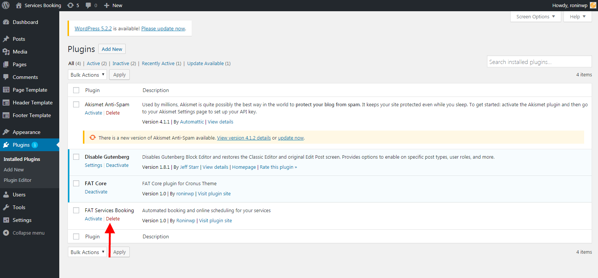

How to update plugin
This section will gives you explanation on how update plugin
- Log into your WordPress admin panel.
- Navigate to Plugins »Install Plugins.
- Click 'Deactive' bellow 'FAT Services Booking'.
- Click 'Delete' bellow 'FAT Services Booking' to delete plugin.
- Download latest version from ThemeForest.
- Install with this package.
All of shortcode and event on your site still exists when deactive, delete and re-install plugin
Deactive Plugin.

Delete Plugin.